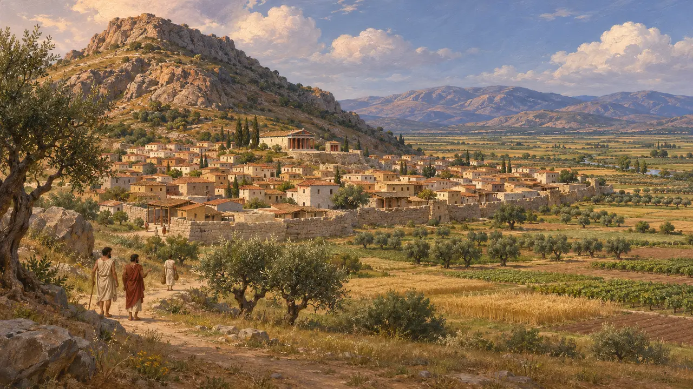
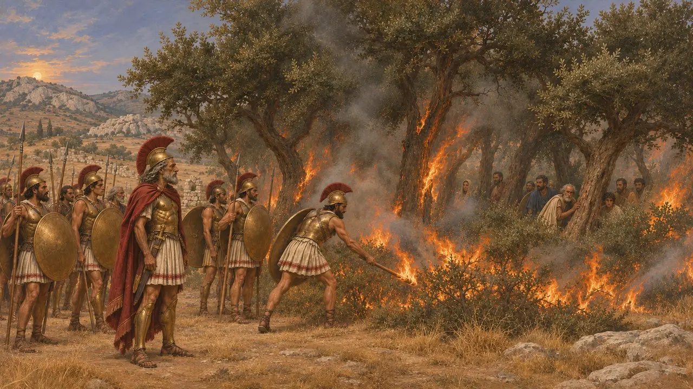
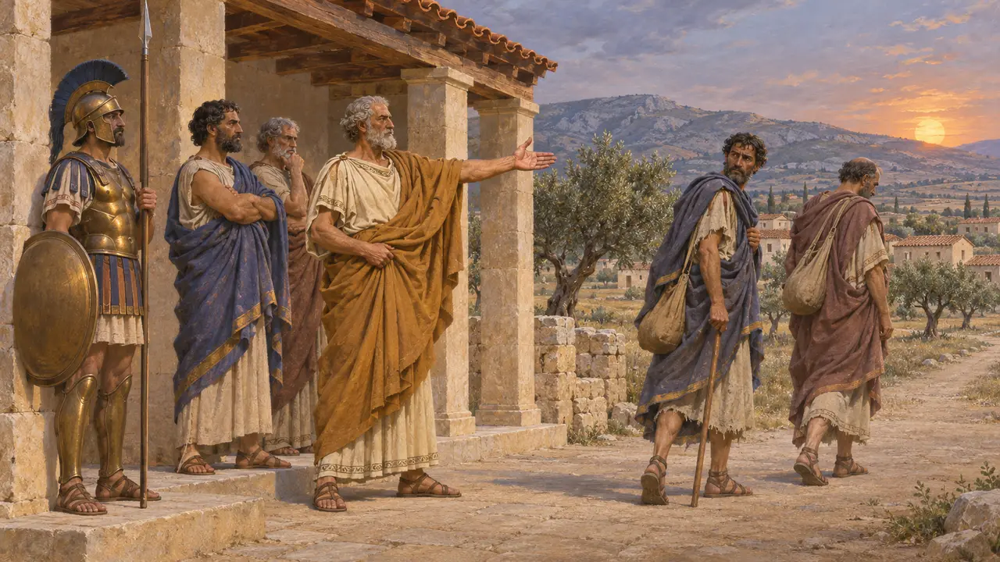
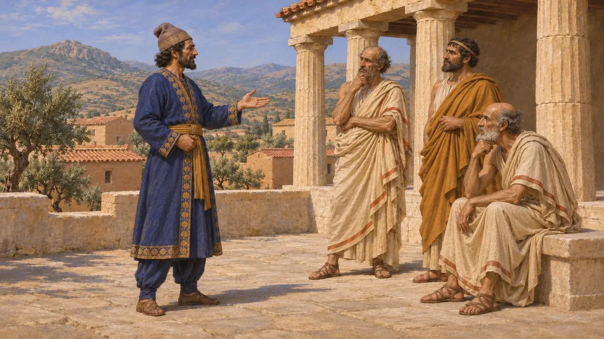
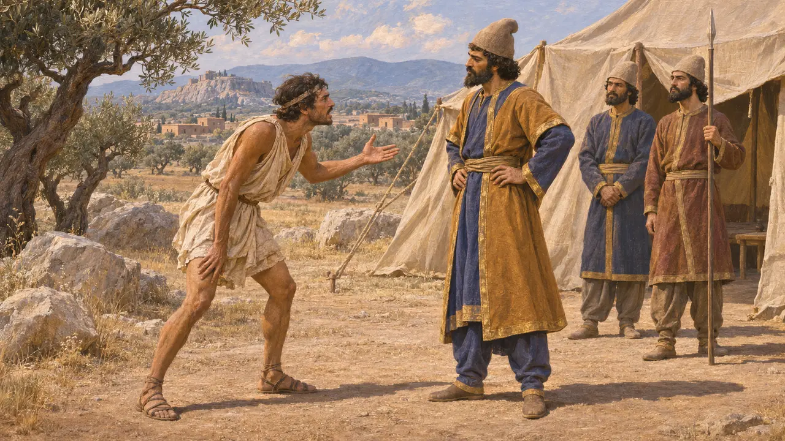

Argos
Greek city of the Argolid, rival of Sparta, neutral in the war of 480 BCE
Argos was one of the oldest and largest cities of the Peloponnese, set in the plain of the Argolid near a great sanctuary of Hera. Long the chief rival of Sparta, it was crippled by a Spartan victory at Sepeia, probably in the 490s. In 480 it stayed out of the Greek alliance against Xerxes, and Greek writers suspected it of sympathy for Persia.
In the game: The game treats Argos as a trade partner and as neutral in 480. The neutrality follows Herodotus, but no ancient source describes Argos trading with the Persian empire, so that role is the game's simplification.

An old power in the Peloponnese
Ancient accountArgos held the fertile plain of the Argolid in the north-east Peloponnese. Herodotus names an early ruler of Argos, Pheidon, who fixed weights and measures for the Peloponnesians. He also tells of a battle with Sparta over the border district of Thyrea, fought about the time Cyrus was besieging Sardis, which Sparta won. By then Sparta had replaced Argos as the leading power of the peninsula.
Herodotus 1.82; 6.127

Defeat at Sepeia
Ancient accountHerodotus says the Spartan king Cleomenes invaded the Argolid and defeated the Argives at Sepeia near Tiryns, probably about 494, though some historians date it earlier. Survivors fled into a sacred grove, and Cleomenes had it burned with them inside. Herodotus puts the Argive dead at 6,000. He adds that slaves then ran the city, perhaps meaning its dependent rural population, until the sons of the dead came of age.
Herodotus 6.76-83; 7.148

Outside the Greek alliance
Ancient accountIn 481 the Greeks resisting Xerxes sent envoys to Argos, and Herodotus gives the Argive version of what followed. Delphi had advised the Argives to stay out, and they offered to join only in return for a thirty-year truce with Sparta and half the command. Sparta replied that the Argive king could have one vote beside its own two kings. The Argives refused and ordered the envoys out of their land by sunset.
Herodotus 7.148-149

Friends of the King
DisputedHerodotus reports that Xerxes sent a herald claiming kinship through Perses, son of Perseus, as ancestor of the Persians, and asking only that Argos stay neutral. He adds that Argive envoys later asked Artaxerxes at Susa whether that friendship still held. He says he passes on these tales without vouching for them. No Persian text names Argos, so the charge rests on Greek reports.
Herodotus 7.150-152

The runner to Mardonius
Ancient accountHerodotus says that in 479 the Argives had promised Mardonius to stop the Spartan army leaving the Peloponnese. When the Spartans marched out, Argos sent its best day-runner to Attica to warn Mardonius that it could not hold them. Mardonius then left Athens for Boeotia, where the war was decided at Plataea. Herodotus is the only source for this message.
Herodotus 9.12-13
Sources
- Herodotus 7.148-152
- Herodotus 6.76-83
- Herodotus 9.12-13
- Herodotus 1.82; 6.127
- R. A. Tomlinson, Argos and the Argolid, 1972